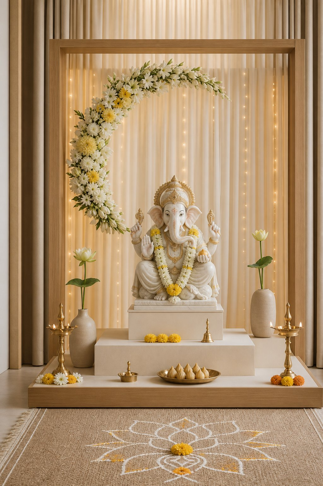
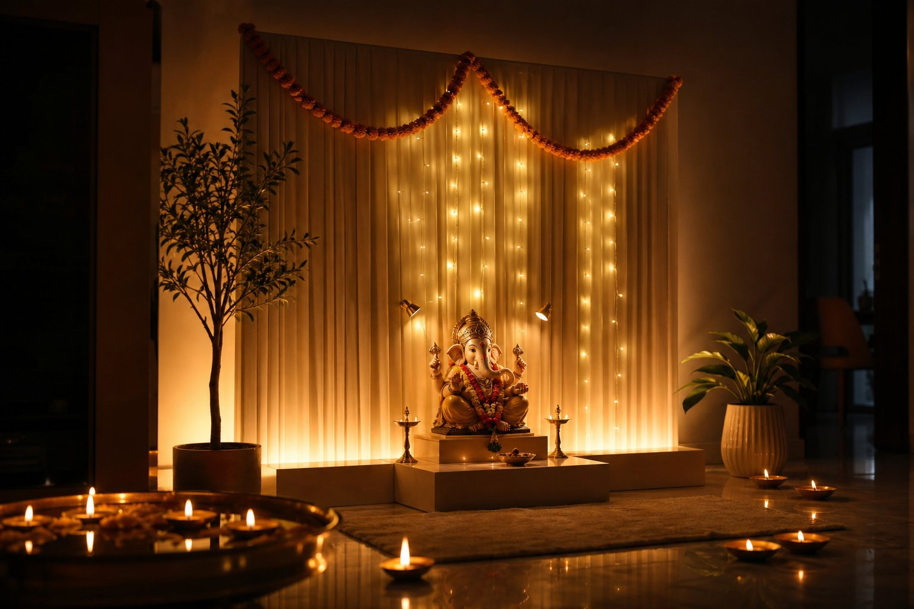
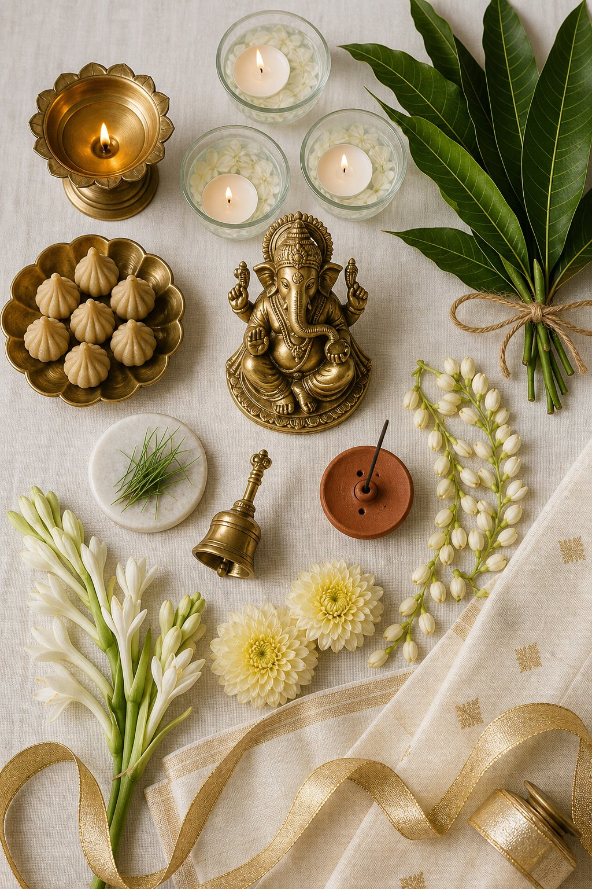

Ganesh Utsav 2026 · Home Mandap Upgrade
You already have the four hard parts — makhar, backdrop, garlands and serial lights. Everything below is additive: what to layer on, in what order, to take a mid-level 2–4 ft home mandap into a calm, modern, “photographed by a designer” space. Nothing here requires dismantling what’s up.
Ranked by visual impact-per-rupee for a mandap that already has structure and lights.


Work front-to-back, bottom-to-top. Each layer is independent — skip any that don’t fit your taste.
Add a sheer second layer 20–25 cm in front of your existing backdrop — organza or voile in ivory/champagne, hung loose so it moves slightly. Then run a light strip between the two layers. The idol now sits in front of a glowing haze instead of a wall of cloth. If you want more, add a thin vertical batten of warm light at the two edges to frame the composition.
One modern shape behind Bappa. A 3–4 ft metal or wooden ring (half-floralled, half-bare) or a slim rectangular arch in matte gold/brass. Modern minimal loves a single geometric line. Skip the thermocol temple cutout entirely — it instantly dates the setup.
Stack 2–3 platforms of different heights under and beside the idol: the idol on the highest, diyas on one mid-level, flowers or a brass urli on another. Varying heights within 15–30 cm is what makes a small mandap read as designed. Use acrylic blocks for a floating look.
Pick one flower, used generously — all-white tuberose, or all-marigold, or all-shevanti. Monochrome massing looks expensive; mixed-colour bunches look busy. Add texture with one green (mango leaf, paan leaf, or durva) rather than a third colour. Full detail in the florals section below.
Brass diya set, a brass bell, a brass modak/naivedya plate, one urli. Keep to one metal finish across everything (all warm brass, or all matte gold — never mixing chrome and brass). A single metal language = instant cohesion.
A thin strand of hanging brass bells at one side, a sheer dupatta that catches the fan’s breeze, floating candles in a shallow brass bowl, or a single incense stick with visible smoke. Still photos look styled; moving elements make it feel alive.
The layer guests notice but can’t name. A lectric diffuser with sandalwood or mogra behind the makhar (not near the idol), one soft bhaktigeet/geet playlist at conversation volume, and fresh durva or paan leaves daily. Avoid strong dhoop right at the idol — it stains and overwhelms.
Hang a thin brass or rattan empty frame 3–4 ft in front of the mandap, or place a couple of floor cushions and a low brass lamp at 6 ft. Gives family photos a designed foreground and keeps people from crowding the idol.

Serial lights are decoration. What’s missing is lighting. Three distinct layers, all warm (2700K–3000K), all dimmable where possible.
| Layer | What & where | Why it works |
|---|---|---|
| 1. Ambient wash | 5 m warm COB LED strip on the floor, tucked behind the makhar base, aimed up the backdrop. Add a second short strip at the top of the backdrop aimed down. | Eliminates the dark gap between makhar and wall. Fabric gains texture; the whole alcove starts to glow. |
| 2. Accent / key | Two small spotlights or picture lights, 45° to the idol’s front-left and front-right, 1–1.5 m away, beam aimed at the face and trunk. | Sculpts the idol — this is what makes the murti itself look luminous while everything else stays soft. |
| 3. Ritual / sparkle | Your existing serial/fairy lights (keep, but hide the wires), plus diyas at the front edge and 3–5 floating candles in a shallow bowl. | Living flame adds the warmth no LED replicates, and the eye always goes to movement. |
Use only warm white (2700K). Mixing cool white with warm brass is the single most common mistake — it makes gold look grey. Keep all wires taped along the backdrop edges and behind the makhar. Put everything on one switch or a smart plug so the whole look turns on in one motion.
No RGB / colour-changing lights, no blinking modes, no blue or green wash on the idol. No bare LED strip visible in reflection — diffuse it behind sheer fabric or inside a channel.
Use a 5V USB strip or a BIS-marked 12V adapter with a proper driver; never run 230V bare-wire rope lights within reach. Total added load here is under 60 W. Add a small surge-protected spike guard for the whole mandap.
Modern minimal fails when too many colours enter the frame. Choose one of these and let every new purchase obey it.
Mid-September in Nagpur is a good flower week — marigold, shevanti (chrysanthemum), mogra/jai, rajnigandha and lotus are all in season and cheap.
One dense arc of flowers sweeping from the upper-left corner down to the idol’s shoulder, leaving the right side bare. Asymmetry is what makes it look intentional.
A 3 ft ring/arch, floralled on only 60–70% of its length. The bare portion is the design — don’t fill it.
A wide shallow brass urli with 2 cm of water, 5 lotus buds, loose shevanti petals and 3 floating candles, placed low and in front, off-centre.
Most people decorate up to the makhar edge and stop. The 4 feet in front of it is what people actually see in photos.
Half of “more beautiful” is “less busy”. Walk up to the mandap and pull out:
Slip a wrapped wooden plank or marble slab under the makhar. 10 minutes, instant presence.
Tape every cable along the backdrop edge and down one leg. 15 minutes, looks 3× more expensive.
Replace any cool-white bulb in the room with warm white. Free-ish, huge difference.
Pull the mismatched steel/silver pieces; keep brass. Free.
Lotus buds + petals in a bowl of water with floating candles. ₹150, 5 minutes, biggest guest reaction.
Everything except idol, diya and naivedya comes off. Free, and it’s the most visible change of all.
| When | What to add / refresh |
|---|---|
| Day 0 · 13 Sept (eve) | Install lighting layers (strip + two accents), riser, sheer overlay, runner. Do the removal pass. Test all lights before Sthapana. |
| Day 1 · 14 Sept | Sthapana in the Madhyahna muhurat. Fresh mango-leaf toran, durva, one-variety garland, brass diya + naivedya. Keep the palette to 3 elements. |
| Days 2–4 | Morning: pull spent blooms, mist garlands, top up urli water. Evening: light the diya 15 min before aarti so the fragrance builds. |
| Day 5 · 18 Sept | First flower refresh — replace garlands entirely. Swap the floral cluster to the opposite corner if you want a “new look” photo. |
| Days 6–8 | Add something new and small each day: bells, a fresh dupatta drape, a new brass piece, sugarcane stalks. |
| Day 10 · 23 Sept | Anant Chaturdashi. Extra marigold, brighter diya row, family photo corner in use. Keep flowers and decorations separate at visarjan — only natural materials go into the water. |
Tick items as you buy. Prices are indicative Nagpur retail (Sept 2026) — your total updates automatically and saves in this browser.